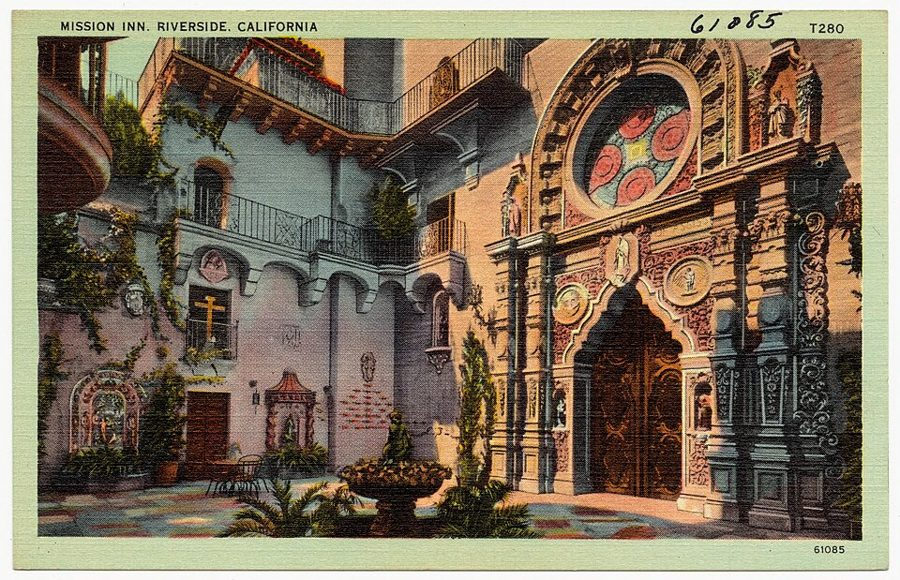
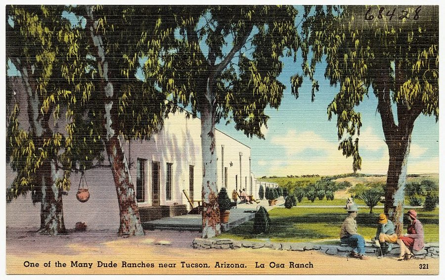
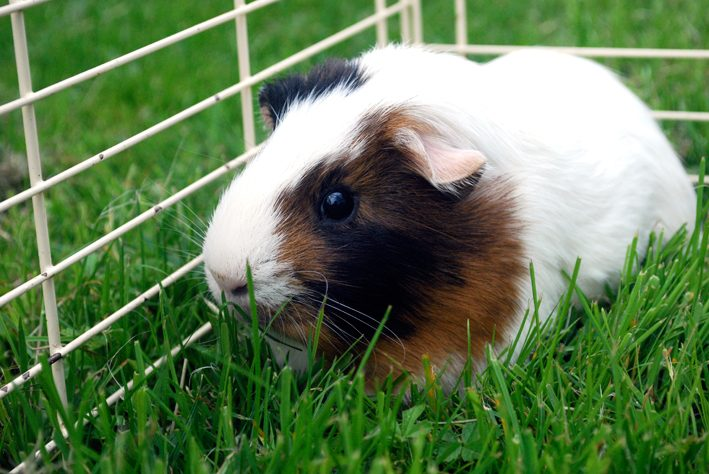
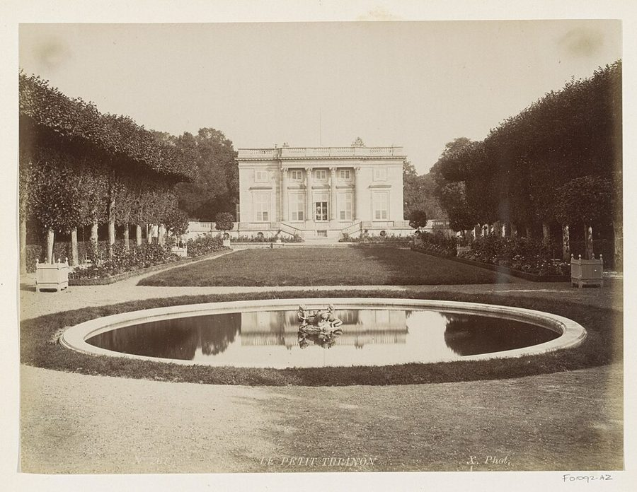
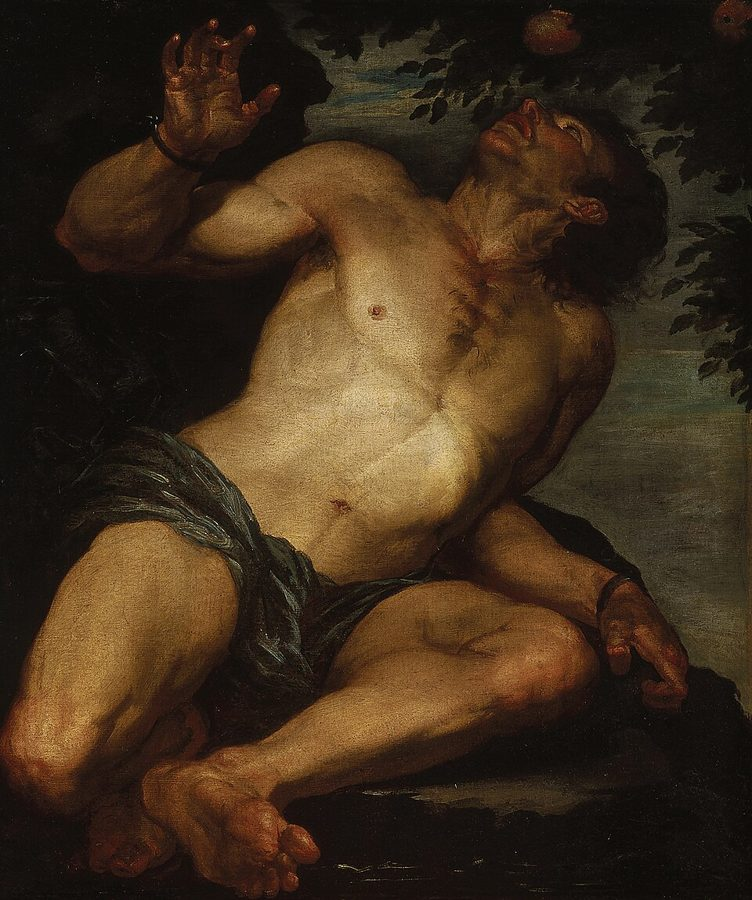

这一章在做什么
全书最后一章，收尾。前三分之一是叙事，走得很快，几个地方一两句就带过。后三分之二是 Dan 一个人的独白：先交代人和公司的下落，再回头想这一整圈时间上的事到底讲不讲得通。
难在后半：他用控制电路的词谈哲学，中间夹着莎士比亚、祷文和一串真实的人名。抓两样：他自己挑出来的那个「对不上的地方」和他给的解释；最后几段怎样回到第 1 章。

Riverside 的 Mission Inn，1930–1945 年间的明信片。场景 2 里 Dan 住的就是这家，他叫它 the old Mission Inn。
Tichnor Brothers, Publisher，公有领域，维基共享资源 人物
都是虚构的人。只写到上一章结束时你知道的，加上他在这一章里是什么角色。
Dan Davis 叙述者「我」 上一章末尾，他办完了 1970 年的事，抱着 Pete 第二次进了冷眠库，合同写明 2001 年 4 月 27 日醒。
Pete Dan 的猫 这一次和 Dan 一起睡的。这一章头一段和最后一段都是它。
Ricky Frederica Virginia Heinicke 上一章 11 岁，在女童子军营地和 Dan 告别，手里有他的股票、一份写好的安排和一枚戒指。约的是 2001 年 5 月 1 日，Riverside。
John Sutton 律师，Dan 的合伙人 1970 年在丹佛收留 Dan，接手办 Aladdin 公司。一直说不信 Dan 的来历。这一章以一封信出场。
Jenny Sutton John 的妻子 话少，待 Dan 很好。只提到。
Dr. Rumsey新 Riverside Sanctuary 的主任 场景 2 出场，说话带点打趣。
Dr. Twitchell 只提到，没出场 Boulder 的物理学家，那台机器是他的。Dan 是把他激怒了才走成的。
Chuck Freudenberg、McBee 只提到，没出场 Hired Girl 公司的两个工程师：Chuck 是 Dan 的啤酒搭子，McBee 是那位守旧的总工程师。
Leonard Vincent 只提到，没出场 第 9 章里 Twitchell 送走的那位同事，去向不明。
Belle 只提到，没出场 名字出现一次。
场景地图
这一章原书用空行分成 3 节，本站再按场景细分成 8 段。粗体是每个场景开头的几个词，照着它在书里找位置；读完一个场景回来打个勾。
MY DREAMS WERE pleasanter this …约 400 词 一个梦，然后是病房和一封短信。留意信里的第一句在问什么。 On Monday, the thirtieth of …约 550 词 Riverside：旅馆，冷眠库。留意主任念的那条指示和 Dan 以为的差在哪。 DR. RUMSEY WANTED her to …约 200 词 三段话换两个地方，全书节奏最快的一处。留意 Dan 签的是哪个名字。 WE GOT OUT of …约 100 词 全章最短的一节，只有五句。留意最后一句只说了一半。 THERE ISN’T MUCH more to …约 650 词 两家公司和几个熟人的下落，股权的行话集中在头一段。后半是一段很绕的对话。 But the explanation I tried …约 450 词 全章最难。Dan 挑出一个对不上的细节，摆出两种解释。看他最后信哪一种。 I’m not the only person …约 450 词 一串真实的人名和旧案，又回到第 9 章那个名字。然后谈这门技术能不能做生意。 But I don’t worry about …约 400 词 收尾。Dan 对过去和未来的态度，Pete，最后回到书名。
背景：作者默认你知道的事
这些都是真实世界里的东西。这一章后半 Dan 一口气点了五六个名字，都不解释，下面按出现的顺序排。
场景 2 Riverside 的 Mission InnRiverside 在洛杉矶以东约 90 公里。Mission Inn 是那里的老饭店，真实存在：1876 年起是一家小客店，1902 年起一圈一圈扩建成西班牙传教站（mission）风格的大院子，占了一整个街区。
1950 年代的加州读者都知道它。所以书里到了 2001 年，Dan 顺口叫它 the old Mission Inn （页首那张图）。
场景 4 guest ranch
Tucson 附近的 La Osa 牧场，1930–1945 年间的明信片，上面印着「Tucson 一带众多 dude ranch 之一」。
Tichnor Brothers, Publisher，公有领域，维基共享资源 接待付费客人的牧场，也叫 dude ranch （dude 原指城里来的外行）。客人住一间间分开的小屋（cabin），吃饭、聚会去主楼（main lodge），白天骑马。
亚利桑那州 Tucson 一带从 1920 年代起就以这种牧场出名，图的是冬天暖和、地方偏、没人打扰。
场景 5 guinea pig
豚鼠。看一眼它的长相，场景 5 的那段对话用得上。
照片：Daniel Hall，CC BY-SA 2.0，维基共享资源 豚鼠，也叫荷兰猪，和猪、和几内亚都没关系。它是老牌的实验动物，所以英语里 guinea pig 也指「被拿来做试验的人」。
第 8 章 Chuck 讲 Twitchell 的实验时用的就是它，Dan 在这一章接着用。
场景 6 一句《哈姆雷特》，一句祷文Dan 连着引了两句话，都不注出处。第一句出自《哈姆雷特》第五幕：There’s a divinity that shapes our ends ，后半句说的是「任凭我们怎样粗粗砍削」。意思是人动手，结局由天定。
第二句是基督教礼拜里天天念的「荣耀颂」（Gloria Patri）的结尾：起初怎样，现在怎样，以后也怎样，world without end ，永无穷尽。
场景 7 Charles Fort美国作家（1874–1932）。他泡在图书馆里，从旧报纸和科学期刊上抄下科学解释不了的报道：天上下青蛙、人凭空消失、来历不明的东西。四本书里最有名的是 The Book of the Damned （1919）。
第 10 章 John 说过自己读过他。Dan 几次引的「到了修铁路的时候才修得成铁路」也是化用他的话，Fort 的原话说的是蒸汽机。
场景 7 Ambrose Bierce美国作家、记者（1842 年生），以《魔鬼辞典》和南北战争小说出名。他写过一组短篇，讲人在众目睽睽之下走着走着就不见了。
1913 年底他自己去了正在闹革命的墨西哥，从此下落不明。所以提「失踪」，美国读者头一个想到他。
场景 7 特里亚农花园里的两位女士
凡尔赛的小特里亚农宫，约 1880–1900 年。
Rijksmuseum，公有领域，维基共享资源 1901 年 8 月，两位英国女教师 Charlotte Moberly 和 Eleanor Jourdain 游凡尔赛，在小特里亚农宫的花园里迷了路。事后两人说，那天看见的人都穿着 18 世纪的衣服，其中一位像是王后玛丽·安托瓦内特。
1911 年她们用化名出了一本书 An Adventure ，轰动一时。英语世界提「回到过去」，这是最有名的一桩旧案。
场景 7 Tantalus
《坦塔罗斯》，Gioacchino Assereto 绘，约 1630–1640 年代。
Gioacchino Assereto，公有领域，维基共享资源 希腊神话里受罚的国王坦塔罗斯：站在齐下巴的水里，头顶垂着果子。他低头喝，水就退；伸手摘，枝就升。永远差一点。英语动词 tantalize （吊人胃口）就从他的名字来。
场景 7 Henry VIII 和 horse latitudes
60°N
30°N
赤道
30°S
60°S
西风带
horse latitudes
副热带无风带
信风带
doldrums 赤道无风带
信风带
horse latitudes
西风带
本站示意图。箭头是盛行风向。两条浅色带里常常一连多日没有风。
南北纬 30 度附近的无风带。帆船时代的船到了这里会一停几个星期，叫 becalmed 。传说船上运的马没水喝，只好扔下海，名字由此而来。
Henry VIII 是 16 世纪上半叶的英格兰国王（1509–1547 年在位），娶过六任王后、杀了其中两位，在他的宫廷里出错是要命的。
场景 8 catnip 和 long-haired
开花的猫薄荷（Nepeta cataria ）。
照片：D. Gordon E. Robertson，CC BY-SA 3.0，维基共享资源
catnip 是猫薄荷，多数猫闻了会打滚、蹭脸、发呆。第 2 章 Dan 拿它形容过 Belle 的香水。
long-haired 在 1950 年代不是说嬉皮士（那是十年以后的事），是挖苦搞艺术、听古典音乐、爱发议论的知识分子，带着「不会干活」的意思。
书里的世界
下面的图是到上一章为止你已经知道的事，画在一起方便你带着它读后半章的独白。表里是这一章新出现的设定。顺带一提：书里 2001 年的几个日期（4 月 27 日星期五、4 月 30 日星期一）和真实的 2001 年日历对得上。
冷眠，约 30 年
1970 年
2000 年底 – 2001 年 5 月
第一遍
12 月 4 日入库
2000 年 12 月醒
5 月 24 日，Boulder
时间机器：退回 31 年零 3 周
第二遍
5 月 3 日，Denver
12 月 4 日再入库
4 月 27 日
合同写的醒来日
Ricky
5 月 1 日
约定的醒来日，Riverside
满 21 岁后入库
本站示意图，不按比例。只画到上一章结束：第二遍的 Dan 刚睡下，右下角的两个日子都还没到。1970 年 5 月到 12 月，世上同时有两个 Dan。
书里的说法 在书里是什么 真实世界里 Forest Lawn Sanctuary Dan 这一次睡的冷眠库。只出现名字，印在他的出库证明上。 Forest Lawn 是洛杉矶一带真实的著名墓园，1906 年建。拿它给冷眠库起名是个冷笑话。 autobellhop 旅馆里的自动行李员。Dan 只提了它一个缺点。 bellhop 是旅馆里帮客人提行李的服务生。2014 年起有旅馆用机器人往客房送东西。 final restimulant 唤醒冷眠者的最后一步用的药。醒前人处在催眠指令下，由医生叫醒（第 2 章讲过这套做法）。 — one-way window 装在猫包上的单向窗。 单向透视玻璃是真的：一面亮、一面暗，暗的一面看得见亮的一面。 the great hazard of the Sleep 书里说，冷眠最大的危险在醒来以后：那种要命的想家（homesickness）。 — branching time streams / multiple universes Dan 说的一种「老」想法：时间会分岔，每条岔路是一个宇宙。 科幻杂志 1930 年代就在写。物理学里的「多世界诠释」由 Hugh Everett 在 1957 年发表，和这本书的单行本同一年。 subflexive fasartas 没解释，也没法解释。 作者造的假词，和第 1 章的 multimorphs 是一个手法：听不懂才像未来的货。 hydraulic bed Dan 手上的一个新设计，一张液压的床。 可升降的病床医院里早就有，后来也有了家用的电动床。 cat bathroom 另一个新设计：给猫用的室内厕所，自动、自己补料、没气味。 自动清理的电动猫砂盆 1990 年代起有售。
这一章的行话，先用中文过一遍
两处要用到行话：场景 5 头一段说两家公司归谁管，用的是股权的词；场景 6 谈时间，用的是控制工程的词。先把概念过一遍。
钱进来，票不出去：普通股、优先股、债券
bonds 债券
preferred stock 优先股
common stock 普通股
借来的钱
付固定利息，到期还本
股份，分红排在前面
通常没有表决权
股份，分红排在后面
一股一票
钱进了公司，表决权没给出去
选董事会
谁票多，公司听谁的
本站示意图。创始人想筹钱又不想让出控制权，就多用左边两种。
第 2 章 Dan 吃亏，就吃在普通股的票数上：他把一部分有表决权的股票送了人。公司要扩张得找钱，找钱有三条路。卖普通股最省事，但每卖一股就让出一票。
另外两条路只让出钱上的好处：优先股 的股东分红排在普通股前面，通常不投票；债券 是公司打的借条，债主只收利息。
拿程序员的话说：普通股给的是写权限，另外两种只给只读的收益。
还有一个说法 vote someone’s stock ：股票在别人名下，但由你代为投票。第 2 章 Dan 说过「股票送了她，票还是我投」，是同一回事。
负反馈和 fail safe
设定值
减
偏差
控制器
被控对象
输出
传感器
量到的输出
恒温器就是这个结构：屋里一热，暖气就关小
本站示意图。粗线是反馈回来的那一路。
negative feedback（负反馈） ：把输出量回来，从目标值里减掉，用差值去纠正。偏得越多，拉回来的力越大，所以系统稳在目标附近。第 2 章 Dan 教机器人给 Pete 挠下巴，靠的就是它。
fail safe（故障安全） ：设计时就规定好，东西坏了要倒向安全的一边。电梯断了电，刹车是抱死的；信号线断了，铁路信号显示的是红灯。程序里的「默认拒绝」是同一个思路。
guard circuit（保护电路） 是专门盯着别的电路的电路，越界就把它拦下，第 2 章 Flexible Frank 的脑袋里就有一圈。
英文 中文 一句话 block (of stock) 一大宗股票 同一个人手里的一整批股份。the largest single block：最大的一宗。 preferred stock 优先股 分红和清算排在普通股前面，通常没有表决权。 float bonds 发行债券 float 是把证券「放」到市场上去卖。 issue 发行 公司新印一批股票或债券卖出去。 board (of directors) 董事会 股东选出来管公司的那几个人。 license 许可，授权 专利还是你的，别人交钱换生产销售的权利。第 2 章 Dan 的反提案就是这个。 tolerance 公差 图纸上允许的尺寸误差。不是「宽容」。 negative feedback 负反馈 用输出的偏差去抵消偏差。 fail safe 故障安全 坏了也只会坏向安全的一边。 guard circuit 保护电路 监视别的电路、越界就拦的电路。 declassify 解密 取消保密等级。classified 是「列为机密的」。
词与短语
词条按在书里出现的顺序排，按场景分组。斜体小字是它所在的那句话里的几个词，方便你在书里找到。
场景 1 MY DREAMS WERE pleasanter this …
following me ahead of me
… “following me ahead of me,” that …
「在我前头跟着我」
故意说得自相矛盾。养猫的人都见过：猫要跟你走，偏走在你前面，还不停回头绕腿。
scallop back and forth
… cats have of scalloping back and …
一个弧接一个弧地来回绕
scallop 名词是扇贝（第 1 章菜单上那个），也指扇贝壳那样的波浪边。这里当动词。
reverse himself
… winter outside, and reverse himself, almost …
原地掉头
reverse 是倒车、反转。把猫说成一台机器。
second time around
… was my second time around; he …
第二回了
time around：一轮、一回。
I give up
… All right, I give up. How …
我认输，你说吧
猜谜猜不出时说的话，不是「我放弃了」。
look someone up
… long in looking us up—I’ve tried …
来看望某人
不是「查找」。won’t be too long in doing：别拖太久才做。
walk where I used to run
… to walk where I used to …
从前跑的地方，现在用走的
说自己老了，说得很轻。
Hasta la vista, amigo
… Hasta la vista, amigo, …
回头见，朋友
西班牙语。美国西南部的人随口会说。这本书比电影《终结者 2》早三十多年。
the enclosure
… If the enclosure is not enough, …
随信附上的东西
enclose 是「随信附寄」。不是围栏。附的是什么，看下半句就知道。
plenty more where it came from
… is plenty more where it came …
那地方还多着呢
do pretty well
… We’ve done pretty well, I think. …
干得不坏（指赚了钱）
do well 说的常常是钱。这里是轻描淡写。
sybaritic
… chore to a sybaritic delight. But …
穷奢极欲的
古希腊城邦 Sybaris 以会享受出名。chore 是不得不干的杂活。
场景 2 On Monday, the thirtieth of …
check out
… of April, I checked out and …
办手续离开
旅馆退房、医院出院都是它。
make a fuss
… made the predictable fuss about taking …
啰嗦一通，大惊小怪
predictable：料得到的。带猫住店，全书每次都是这一出。
not responsive to bribes
… is not responsive to bribes—hardly an …
不吃贿赂这一套
responsive to：对……有反应。机器不收小费，Dan 说这算不上进步。
flexibility in his synapses
… had more flexibility in his synapses; …
脑筋活络些
synapse 是神经元之间的突触。Dan 说人也用电路的口气。
listen to reason
… he listened to reason as long …
讲得通道理
这里的「道理」是下一条。
crisp and rustled
… it was crisp and rustled. I …
挺括，还沙沙响
说的是新钞票。
committed client
… have a committed client here named …
已入库的客户
commit 是「送进（机构）」，第 1 章见过。不是「忠实客户」。
withdrawal certificate
… and my withdrawal certificate from Forest …
出库证明
书里 withdrawal 和 commitment 成对：出库、入库。不是取款。
by any chance
… today. By any chance, are there …
不知有没有可能
客气的问法，表示自己没抱太大指望。
read
… this client do not read to …
（文件上）写的是
主语是文件。The sign reads …：牌子上写着……
a heart of gold
… must have a heart of gold. …
一副好心肠
account for it on
… I can’t account for it on …
拿……来解释这件事
account for：说明原因。和上一条连着读，是一句玩笑。
park
… I had parked him there in …
暂时安置
把人或东西先搁在某处。口语。
none too pleased
… he was none too pleased with …
很不满意
none too + 形容词 = 一点也不。
turn up his nose at
… had turned up his nose at …
看不上，不屑一顾
yeast strips 是第 5 章那种酵母做的「培根」。
bring her up
… just there, I’ll bring her up. …
把她唤上来（唤醒）
不是「抚养」。第 2 章说过，冷眠的人是 brought up 回来的。
Tech class ring
… wearing my Tech class ring on …
理工学院的毕业纪念戒指
美国大学毕业生订做的戒指，刻校名和届别。上一章见过。
shoulder dives
… started doing shoulder dives against her …
拿肩膀一头一头地扎过去蹭
Dan 自己的说法。dive 是俯冲。
场景 3 DR. RUMSEY WANTED her to …
would have none of it
… Ricky would have none of it. …
说什么也不肯
jump to
… door and we jumped to Brawley. …
（坐飞行出租车）跳到
书里 2001 年的说法，第 9 章见过 jumpcab。
care of
… to Aladdin, care of John Sutton. …
由……转交
信封上写作 c/o。
in a fine round hand
… book in a fine round hand, …
用工整圆润的字体
hand 是笔迹。
magnum opus
… had designed this magnum opus. A …
毕生杰作
拉丁语。第 2 章他用这个词说过 Flexible Frank。
till death us do part
… take thee, Frederica...till death us do …
直到死亡把我们分开
英语婚礼誓词的固定句子，出自公祷书，所以是古英语：thee = you，us do part 是倒装。choke over：哽着说。
best man
… Pete was my best man. The …
伴郎
不是「最好的人」。
scrape up
… The witnesses we scraped up in …
临时凑来
scrape 是刮。把宾语 the witnesses 提到了句首。
场景 4 WE GOT OUT of …
main lodge
… away from the main lodge and …
（牧场的）主楼
见上面「背景」。
fetch and carry
… Beaver to fetch and carry so …
跑腿打杂
成对的固定说法。
the tom
… battle with the tom who until …
那只公猫
tom = tomcat。monumental battle：一场大战。
keep Pete in
… had to keep Pete in or …
把 Pete 关在屋里
whereupon 是「这之后」，第 1 章见过。
take to
… Ricky took to being married as …
一下子就适应了、喜欢上了
take to + 名词或动名词。as if she had invented it：好像这事是她发明的。
场景 5 THERE ISN’T MUCH more to …
vote someone’s stock
… Voting Ricky’s Hired Girl stock—it was …
代某人行使股票的表决权
见上面的行话。
ease upstairs
… had McBee eased upstairs to “Research …
客客气气地「请上楼」：明升暗降
常见的说法是 kick someone upstairs。Dan 用 ease，手轻一点。那个头衔见第 6 章。
an idle threat
… threatening to retire—an idle threat. He …
说说而已的威胁
idle 在这里是「空的、不会兑现的」，不是「空闲」。
think well of
… good idea—Darwin thought well of it. …
对……评价不错
玩笑。达尔文讲的是物种之间的生存竞争，Dan 拿来给两家公司打对台背书。
to exact tolerance
… my drawings to exact tolerance. When …
分毫不差地照公差（加工）
machinist 是机工。
put it out for license
… something I put it out for …
拿出去找人授权生产
sore at
… guess he is still sore at …
生……的气
美国口语。sore 本义是疼。
Unsung Genius
… going to title it Unsung Genius. …
《没人歌颂的天才》
unsung：没被唱进歌里的，引申为被埋没的。第 9 章 Dan 随口编的书名是复数。
clairvoyant
… that I am “merely” clairvoyant and …
有预知能力的
法语来的词，「看得清」。第 10 章 Dan 自己管它叫 second sight。
no foolin’
… was actually and no foolin’ also …
不骗你
foolin’ = fooling。夹在句子中间加重语气。
kick him back
… time cage and kick him back …
把它「踢」回（一周前）
第 9 章 Twitchell 也这么说硬币。
pen
… him in a pen with himself. …
（关小动物的）圈
不是笔。
there never was but one
… Why, there never was but one. …
从头到尾就只有一只
but = only。句首的 Why 是语气词，不是「为什么」。
not one to fret over
… Ricky is not one to fret …
不是那种会为……发愁的人
be not one to do：不是会做某事的那种人。
do my darnedest
… I did my darnedest to convince …
使出浑身解数
darn 是 damn 的客气说法。怎么个「说服」法，书里不写。
场景 6 But the explanation I tried …
count the revolutions
… merry-go-round myself and counting the revolutions. …
数着转了几圈
merry-go-round 是旋转木马；revolution 是转一圈，不是革命。
monkey with
… because I had monkeyed with the …
乱动，瞎摆弄
setup 在这里是「原先的安排」。
somewhen
… universe somewhere (or somewhen) in which …
某个「时候」
仿 somewhere 造的词。第 10 章他也想过 When am I。
fend for himself
… wandered off to fend for himself, …
自己想办法活下去
fine print
… One line of fine print isn’t …
小号字
通常指合同里的小字条款，这里就是字面意思：报上的一行小字。
stark mad
… met myself—and gone stark mad? No, …
彻底疯掉
stark 只加强语气：stark naked、stark staring mad。
the excluded “not possibles”
… one of the excluded “not possibles” …
被排除掉的那些「不可能项」
把形容词直接当名词加复数，是工程师列清单的口气。
rough-hew
… our ends, rough-hew them how we …
粗粗砍出个大样
hew 是用斧子砍。见上面「背景」。
world without end
… ever shall be, world without end, …
永无穷尽
祷文里的固定说法，不是「没有尽头的世界」。
场景 7 I’m not the only person …
close that switch
… Doc Twitchell closed that switch oftener …
合上那个开关（接通）
电路里 close 是「合闸、通电」，open 才是断开。和日常说的「关」正相反。
come of it
… if much ever comes of it. …
由此产生（什么结果）
Nothing came of it：后来不了了之。
railroad
… said, you railroad only when it …
修铁路、办铁路
名词当动词。第 5、6 章说过同一句话。
beat his way across
… Did he beat his way across …
一路吃着苦头横穿
could have swung it
… Italy; he could have swung it. …
办得成
swing a deal：把一件难办的事办下来。第 4 章 Belle 用过。
former art
… without centuries of former art to …
前人攒下的技术
art 是「技艺」，不是艺术。专利法里叫 prior art。第 2 章见过。
whip
… a special alloy, could whip you. …
把你难倒、打败
口语。alloy 是合金。
wind up at
… Imagine winding up at the court …
最后落到了……
wind 读 /waɪnd/。court 是宫廷。
becalmed
… Being becalmed in the horse latitudes …
（帆船）因无风而停航
until the bugs are out of it
… gadget until the bugs are out …
毛病没排干净之前
bug 指机器的毛病，工程师在有计算机以前就这么说了。
the Builder
… be because the Builder designed the …
造物主
工程师对上帝的叫法：造这台机器的那位。所以后面的 He、His 大写。
a semantic blank
… “anachronism” is a semantic blank. …
一个没有所指的空词
blank 是空白。又是第 1 章「语义师」那一路的想法：有些词听着像回事，其实不指任何东西。
场景 8 But I don’t worry about …
get off at the wrong station
… getting off at the wrong station. …
下错站
接着上面「修铁路」的比方。
crepehangers
… Despite the crepehangers, romanticists, and anti-intellectuals, …
专说丧气话的人
crepe 是办丧事挂的黑纱，「挂黑纱的」就是到处扫兴的悲观派。老说法。
horse sense
… tools...with horse sense and science …
朴素的常识
和马的智力无关，说的是庄稼人那种实在的判断力。
long-haired belittlers
… Most of these long-haired belittlers can’t …
那帮留长头发、专门贬低（进步）的人
belittle 是「把……说得一钱不值」。long-haired 见上面「背景」。
drive a nail
… belittlers can’t drive a nail nor …
钉钉子
drive 是「敲进去」。slide rule 是计算尺。
mad at
… I am not mad at anybody …
生……的气
美国口语里 mad 多半是生气，不是疯。
I like now
… at anybody and I like now. …
我喜欢「现在」
now 当名词用。全书 Dan 一直这么说。
the very Long Sleep
… must take the very Long Sleep. …
那场真正的长眠
the Long Sleep 在书里是冷眠的商品名，加一个 very 就成了它的本义。
tabbies are complacent
… and tabbies are complacent, and robot …
母猫都好说话
tabby 是虎斑猫，也泛指母猫，和 tom 相对。complacent 这里是旧义「顺从的」，不是「自满」。abound：到处都是。
strop against
… and legs to strop against, but …
来回蹭
strop 是磨剃刀的皮带。第 4 章 Pete 蹭 Dan 的小腿用的也是这个词。
for a temporary happier reason
… but for a temporary happier reason. …
为了一个暂时的、叫人高兴的原因
1950 年代的小说不直说，要你自己读出来。
Yea
… her sweet eternal Yea! is unchanged, …
「好」
yes 的古语，读 /jeɪ/。
a proper cat
… Pete, being a proper cat, prefers …
一只像样的猫
proper：名副其实的。
go outdoors
… cat, prefers to go outdoors, and …
到外头去「方便」
go 单用指上厕所，第 1 章 Dan 对 Pete 说过 you just went。
值得停下来的句子
You’re allowed to do anything inside the rules...but you come back to your own door.
— 场景 6，Dan 的结论。本站译：规则之内，你想做什么都行……可你总会回到自己的那扇门前。
前半句是自由意志，后半句是命定，中间一个 but 。Dan 不认为这两样冲突：他确实是自己决定回去的，而他回去做的每一件事，又正好是他醒来时看到的那个世界的来历。
door 这个词选得不随便。全书的门都是 Pete 和 Dan 往外找的；到这一句，门成了你绕一圈会回到的地方。
Tell me one thing—are you glad you waited for me to grow up?
— 场景 5，Ricky。本站译：只告诉我一件事：你等我长大，高兴吗？
注意谁在等谁。按钟表算，是 Ricky 等了三十年；按各人自己过的日子算，Dan 从营地到这里只过了几天，Ricky 过了十年再加一觉。她说 you waited ，是把这件事算成两个人一起等的。
这也是全书最受争议的地方：Dan 许婚时 Ricky 十一岁，他一直是她的「Danny 叔叔」。后来的读者和评论者对这个安排多有批评。
You know, I think he is right.
— 全书最后一句。本站译：你知道吗，我觉得它是对的。
七个词。he 是 Pete，「对」的是上一句：把所有的门都试一遍，总有一扇通向夏天。第 1 章里同样的话是当笑话讲的，一只猫的固执；现在 Dan 把它当结论。
You know 是对读者说的。全书到最后一行，叙述者才转过脸来。
检查一下理解
先在心里答，再点开。答错的那题，回书里把对应的场景再读一遍。
1.（场景 1）John 信里问 How did you do it，问的是什么？他现在信 Dan 了吗？
问的是 Dan 三十年前怎么能把后来的事说得那么准。第 10 章分手时他说过，等再见面，要看 Dan 讲的 2001 年准不准。I give up 是猜不出、认输，不等于信了：场景 5 里 Dan 说，John 只肯承认他「不过是」有预知能力，证据不愿意看。
2.（场景 2）Dan 怎么让旅馆同意他带猫进房间的？
塞钱。自动行李员不收贿赂，他只好找副经理；「挺括、沙沙响的道理」就是新钞票。
3.（场景 2）Dan 以为 Ricky 留下的指示是什么？实际是什么？Dr. Rumsey 那句打趣是什么意思？
Dan 当年让她写明 5 月 1 日唤醒，他来了才发现她改了：不定日子，Dan 不到就不醒。也就是说，他要是没来，她宁可一直睡下去。主任的意思是：她肯这样等你，想必是你心好，因为凭你这长相可说不通。
4.（场景 3）Dan 在 Yuma 签名时为什么特意写全名？
第 8 章里，专利上的 D. B. Davis 让他疑心是另一个同名同姓的人，为这个缩写折腾了一大圈。这回他把 Daniel Boone Davis 写全，是跟自己开的玩笑。第 9 章他在这本登记簿上看到、吓得掉头就走的，就是这一行。magnum opus 说的是这桩婚事。
5.（场景 5）Hired Girl 和 Aladdin 现在各归谁管？Dan 自己管哪一家？
Hired Girl：最大的一宗股票是 Ricky 的，由 Dan 代投，所以他能把 McBee 挪开、让 Chuck 当总工程师。Aladdin：John、Jenny 和 Dan 三人控股，因为 John 筹钱时发的是优先股和债券。但 Dan 哪家的董事会都不进，两家照旧竞争，他只开一间小设计室，画出东西就授权出去。
6.（场景 5）Dan 说度蜜月时他「同时」也在 Boulder，去营地看 Ricky 时「同时」也躺在 San Fernando Valley。这两处各是哪两个 Dan？
2001 年 5 月：新婚的是睡了第二觉醒来的 Dan；Boulder 那个是还没走的第一遍的 Dan，正在磨 Twitchell（他 5 月 24 日才进机器）。1970 年 12 月 4 日上午：营地里的是从 2001 年回来的 Dan；躺在 Miles 家里、被打了药的是第一遍的 Dan。页面上面那张图里，这就是两条线重叠的两段。
7.（场景 5）豚鼠那段对话，Ricky 最后一句反驳驳倒 Dan 了吗？
没有，但 Dan 认输了。他想靠剪尾巴来区分两只豚鼠，Ricky 指出豚鼠没有尾巴。这是事实（上面那张照片里看得出），可它只驳了例子，没碰道理。Dan 的结论是自己就不该解释。Ricky 接下来那句「一个你就够了」才是她真正的回答：她不需要弄懂。
8.（场景 6）Dan 说自己漏了什么？他摆了哪两种解释，最后信哪一种？
第一遍在 2001 年时，他天天查报上的出库名单，却没看到 4 月 28 日那天登的 D. B. Davis，也就是第二遍的自己。一种解释是时间分了岔，他进了另一个宇宙；他不取，理由是一行小字撑不起一个宇宙，多半只是那晚睡着了没读到。另一种是他的结论：世界只有一个，要是当时看到了，他就不会去做后来那些事，这行字也就不会存在，所以「看到」这个可能从一开始就被排除了。他把这叫作带 fail safe 的负反馈。
9.（场景 7）Dan 为什么说 Tantalus had it easier？是比谁轻松？
比 Leonard Vincent，如果他真的落到了十五世纪、成了达·芬奇。坦塔罗斯只是够不着水和果子；这个人脑子里装着飞行、动力和无数后世的东西，却造不出来，因为缺几百年的技术积累。这也是「到了修铁路的时候才修得成铁路」的意思。
10.（场景 8）Dan 还会再用那台机器吗？他对「回到过去」是什么态度？
不会，怕下错站。他说回头路只在紧急时候走，要去就往前去，未来比过去好；将来他儿子要是想试，他会这么劝。my son 和后面 Ricky「暂时」发胖的原因是同一件事：她怀孕了。他讨厌的是那些把过去说得比现在美的人。